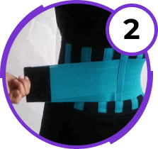

Cintura medica innovativa
per la schiena BackSupport
Sbarazzarsi di
mal di schiena in pochi secondi!
-
Ripristina la colonna vertebrale
-
Elimina il dolore e l'infiammazione
-
Stimola la perdita di peso nell'addome
-
Protegge la colonna vertebrale da lesioni
Fino alla fine dell'azione:
Pensa alla salute della colonna vertebrale se sei:
-
Condurre una vita sedentaria
-
Esercizio attivo
-
Carichi la spina dorsale al lavoro e a casa
-

Sentire disagio alla schiena e alle gambe
-
Soffre di mal di testa
Tutto questo viene a conseguenze disastrose!
-
Distruzione delle vertebre
-
Ernia e scoliosi
-
Nervi pizzicati
-
Insensibilità nelle estremità
BackSupport-prima cintura medica di prima classe
Studi dimostrano che i problemi alla schiena sono il 96% delle persone di età compresa tra i 20 e i 65 anni, e la ragione nel 76% dei casi è la mancanza di attività o, al contrario, lesioni acquisite durante lo sport o il sollevamento pesi.
BackSupport — prima cintura per la schiena, che ufficialmente è un dispositivo medico di classe I. Questo sviluppo principali kinesiologi, che è in grado di alleviare il mal di schiena e ripristinare completamente la struttura e la funzionalità della colonna vertebrale!
BackSupport è efficace anche con problemi gravi:
-
Curvatura della spina dorsale
-
Ernia del disco intervertebrale
-
Mal di schiena, anca e gambe
-
Sindrome della sciatica paralitica
-
Riabilitazione dopo infortuni e interventi chirurgici
-
Eccesso di peso nella zona della schiena e dell'addome
Come funziona la cintura posteriore BackSupport?
Cintura è progettato tenendo conto delle caratteristiche fisiche della colonna vertebrale e del bacino, quindi è sicuro al 100% e può essere utilizzato anche in presenza di lesioni e malattie della schiena.
Interno elastico telaio agisce come un corsetto, mantenendo la colonna vertebrale e fissandolo in posizione naturale e neoprene pellicola fornisce un effetto termogenico, aumenta la circolazione del sangue, quindi brucia i grassi e stimola il processo di rigenerazione.
Materiali innovativi della cintura BackSupport
-
Membrana neoprene
Materiale Innovativo che migliora la termoregolazione, pratica e la circolazione del sangue, ma respira e non crea l'effetto.
-
Raggi anatomici
Il supporto è fornito con raggi anatomici elastici che alleviano il carico dalla colonna vertebrale e stimolano il recupero del corsetto muscolare.
-
Doppio livello di montaggio
Cintura ha due livelli di velcro: questo permette non solo di ottenere il massimo effetto terapeutico, ma offrire comfort e comodità durante l'uso.
Materiali innovativi della cintura BackSupport
-
Invisibile sotto i vestiti
Orario non solo ripristina la colonna vertebrale, aiuta a sbarazzarsi di centimetri in vita.
-
Conveniente
Nella cintura, ti sentirai libero e confortevole: non blocca il movimento e allevia il carico.
-
Durevole e affidabile
Cintura è fatta di materiali durevoli e durerà a lungo! È anche adatto per il lavaggio in acqua calda.
I medici confermano L'efficacia di BackSupport
Prima, il trattamento della schiena richiedeva un sacco di sforzi, investimenti e tempo, ma ora i medici hanno sviluppato la prima cintura, che è ufficialmente testata in pratica e riconosciuta come efficace. Vi consiglio di guardare a questa innovazione!
Nella principale clinica neurologica, è stato condotto un esperimento con la cintura medica AgileBak, che ha coinvolto 4, 358 persone di età compresa tra 20 e 60 anni.
Come risultato:
- --99% ha immediatamente notato che la schiena ha smesso di ammalarsi
- --91% ha notato una diminuzione dei volumi nell'addome
- --86% ha notato un miglioramento della mobilità della colonna vertebrale.
Alexander Ganacci,
Neurologo-osteopata,
18 anni di esperienza
Tecnologia della cinghia:
Come utilizzare e indossare?
-
Posizionare la cintura sulla zona lombare e serrare la chiusura inferiore in modo da fissare la schiena.
-

Fissare definitivamente la cintura con un velcro di secondo livello.
-
Indossare la cintura durante gli allenamenti, per il recupero e la prevenzione delle malattie della colonna vertebrale.
Commenti
Marco, 54 anni
Ho avuto un mal di schiena per diversi anni, ma nulla ha aiutato, anche i medici. Un amico mi ha consigliato di comprare una cintura medica BackSupport, e ho deciso di controllare. Si è scoperto che questa è l'unica cintura ufficialmente raccomandata dai medici, e il resto è una menzogna. In realtà, è venuto fuori: la schiena non fa più male
Edoardo, 37 anni
Recentemente ho imparato che quando si fa sport, è necessario un ulteriore supporto, altrimenti i problemi della colonna vertebrale iniziano nel tempo. Ho ordinato una cintura medica BackSupport, e dopo 2 settimane ho notato che il dolore è scomparso nella colonna vertebrale. Pensavo che fosse la norma, ma non lo è! Prenditi cura del tuo
Alfredo, 36 anni
Questa cintura ha subito due grandi effetti: aiuta a ripristinare la colonna vertebrale e brucia perfettamente il grasso sulla pancia. Lo indossava per un mese e notò persino che c'erano dei cubi della stampa. In questo caso tutti i miei problemi alla schiena sono spariti, anche se il loro è stato un bel po'. E pizzicato, e stretching. Molto soddisfatto con L'effetto di BackSupport, e il fatto che è comodo da indossare!
Perché ordinare la cintura BackSupport esattamente da noi:
-
100% efficacia, provata in pratica
-
Sviluppo dei principali kinesiologi
-
Materiali innovativi di alta qualità
-
141 506 acquirenti soddisfatti
Ordine BackSupport - semplice!
-
Lasciare una richiesta sul nostro sito web
-
Il responsabile vi contatterà
-
Consegna entro 1-3 giorni
-
Pagamento al ricevimento del corriere
Cintura medica innovativa
per BackSupport
Sbarazzarsi di
mal di schiena in pochi secondi!
Fino alla fine del titolo: